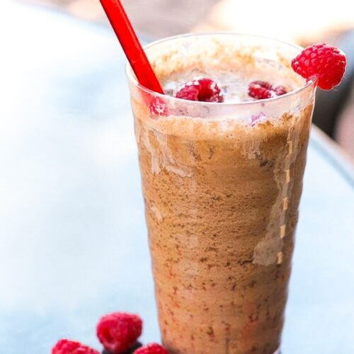
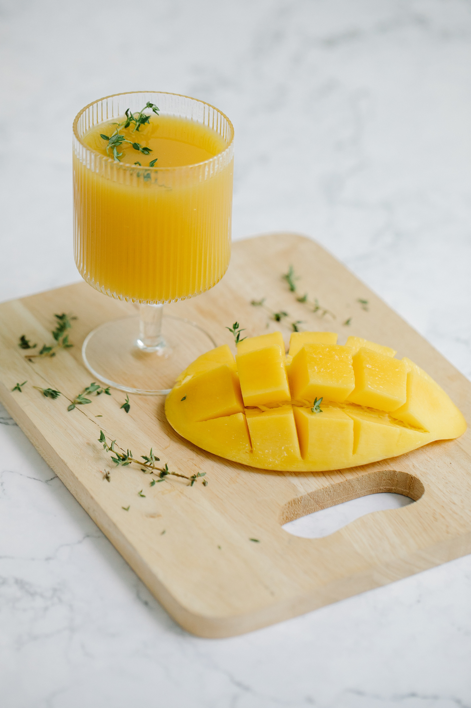

Strawberry Lemonade

Ingredients: 1 lb Strawberries (3.99) 2 Lemons (0.79 each) 4 cups water (free) OR Sparkling Water - Flavored or Unflavored (2.29-4.99) 1/4 Cup Sugar (2.99) Optional: Strawberry Syrup (3.00)
Directions: 1.) In a large pitcher or bowl add desired amount of water 2.) Cut up lemons and add squeeze desired amount 3.) Cut up strawberries finely, and add to lemonade for strawberry infusion 4.) Add desired amount of sugar for sweetness 5.) Optional: Add Torani Strawberry Syrup for extra flavor or sub for strawberry 6.) Stir and pour over ice in a glass add a Strawberry for garnish
Time: 10-20 minutes Price: $7.77 - $15.76 Can serve 1-6 people depending on amount
Coconut Rasperrby Dr. Pepper
Ingredients: 1 can Dr. Pepper - (2.49 - 8.99) Coconut Creamer - (3.49) Raspberries - (4.00) Optional: Limes - (0.69 each) Raspberry Syrup - (3.00) Vanilla Syrup - (3.00)
Directions: 1.) Take your raspberries and in a bowl mush them into a puree. 2.) Take a glass and pour your raspberry puree into the glass 3.) Add desired amount of ice 4.) Pour 2 tablespoons (or desired amount) of cocunut creamer to glass 5.) Optional: Squeeze and add lime to the glass 6.) Add your Dr. Pepper to the glass and Stir 7.) Optional: Add desired amount of syrups to glass 8.) Voila! You've made your own version of a Sodavine drink!
Time: 5-10 minutes Price: $9.98 - $23.17 This will create several desired servings! Require a one-time purchase for several uses depending on how much you make.
Mango PassionFruit Refresher
Ingredients: 1/2 cup Mango Juice - (2.49 - 4.29) 1/2 cup Passion Fruit Juice - (2.50 - 4.99) 1 Cup Water (free) OR Sparkling Water - (2.29) Optional: Mint - (2.00 each)
Directions: 1.) In a glass add ice 2.) Pour your Mango Juice into Cup 3.) Pour Your Passion Fruit into cup 4.) Pour desired amount of water or sparkling water to cup 5.) Optional: Add mint as a garnish
Time: 2-5 minutes Price: $4.99-$15.57 This will create several desired servings! Require a one-time purchase for several uses depending on how much you make.